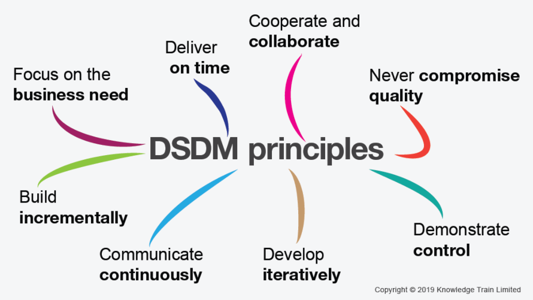

DSDM (Dynamic System Development Method)
DSDM is an agile method created in 1994 that focuses on
the entire project lifecycle. It was designed as an alternative to the
increasingly popular RAD (Rapid Application Development) with the
intention of giving teams more control and discipline.
The key to DSDM’s success lies with the underlying philosophy “that
any project must be aligned to clearly defined strategic goals and
focus on early delivery of real benefits to the business”. This
philosophy and the 8 principles of DSDM help teams maintain focus and
achieve defined project goals.
What are the 8 principles of the DSDM agile framework? The DSDM agile
framework is underpinned by 8 key principles. These are:

- Focus on the business need
Advocates of DSDM believe that a
business case must be made for the project before any development can
begin. The team must have total, crystal-clear comprehension of the
project’s priorities so that each decision helps to achieve the
defined goals.
- Deliver on time
As an agile framework, DSDM works with fixed
timeboxes and iterations to create a product. There is a strong
emphasis placed on prompt delivery to help control changing
requirements.
- Collaborate
Collaboration is crucial to the success of DSDM. Teams
should work as a singular unit to create quality products with real
value baked into every feature.
- Never compromise quality
For agile teams, streamlining processes
and avoiding waste is crucial. DSDM follows that same principle but
reminds us to never sacrifice quality. To adhere to this principle,
DSDM teams must continuously test and review their work.
- Build incrementally from firm foundations
DSDM differs from other
agile methods as it requires the foundations of the project to be
established early. The foundations don’t need to have too much detail,
just enough to define the problem and how you intend to solve it.
To do this, DSDM teams perform analysis and ‘enough design up front’
(EDUF) at the start of the project.
- Develop iteratively
As with other agile methodologies, teams using
the DSDM agile framework will build the product incrementally to
ensure maximum value.
- Communicate continuously and clearly
At every stage of development,
DSDM teams need to be transparent. This is enabled through daily
stand-ups, sprint reviews, and prototyping.
- Demonstrate control
DSDM was created to give product managers more
control over their projects. Product managers can demonstrate control by ensuring
that all progress is visible and progress is measured by deliverables.
Sources:
Airfocus
Perplexity
Knowledge TRAIN